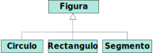

Tipos de datos algebraicos
Programación Declarativa Aplicada
Máster en Ingeniería Informática
Facultad de Informática
Universidad Complutense de Madrid
Máster en Ingeniería Informática
Facultad de Informática
Universidad Complutense de Madrid
- Tipos producto
- Tipos unión disjunta
- Ajuste de patrones en tipos unión
- Extensibilidad
Tipos de datos algebraicos (TDA)
- El concepto de tipo de datos algebraico (TDA) es fundamental en programación funcional.
- Un TDA es un tipo de datos formado mediante la combinación de otros tipos de datos, bien sean simples, o bien otros TDA.
- Hay dos clases fundamentales de TDA:
- Tipos producto
- Tipos unión disjunta
Tipos producto
Tipos producto
- Sirven para agrupar valores de distintos tipos en una única entidad.
- Por ejemplo:
Una instancia dedata class Empleado(val id: Int, val nombre: String, val direccion: String)Empleadocombina los tres campos:id,nombreydireccion. - Otro ejemplo:
data class Pair<T, S>(val first: T, val second: S)
Tipos producto
- Existen en casi todos los lenguajes:
- C: registros (
struct) - Java: clases (
class) - C++: registros (
struct) y clases (class) - Javascript: objetos
- C: registros (
Tipos unión disjunta
Tipos unión disjunta
- Un tipo unión puede tomar valores de uno de entre varios tipos prefijados
T1,T2, ...,Tn, denominados alternativas. - Dado un elemento de un tipo unión, siempre es posible determinar a qué alternativa
Ticorresponde. - También llamados: sum types, variants, discriminated unions, disjoint unions, coproducts.
Ejemplo
- Los tipos unión existen en la mayoría de lenguajes funcionales. Por ejemplo, en OCaml:
type figura = | Rectangulo | Circulo | Segmentoo en Haskell:
data Figura = Rectangulo | Circulo | Segmento - Un valor de tipo
Figurasolamente puede serRectangulo,CirculooSegmento.
Ejemplo
- Cada una de las alternativas de un tipo unión puede ser, a su vez, un tipo producto:
type punto = ... type figura = | Rectangulo of { centro: punto, alto: float, ancho: float } | Circulo of { centro: punto, radio: float } | Segmento { desde: punto, hasta: punto }o en Haskell:type Punto = ... data Figura = Rectangulo Punto Float Float | Circulo Punto Float | Segmento Punto Punto
¡Ya conocíamos los tipos unión!
Option<T> =
| None
| Some(value: T)
Either<L, R> =
| Left(value: L)
| Right(value: R)
List<T> =
| Nil
| Cons(head: T, tail: List<T>)
Ajuste de patrones
- Los lenguajes funcionales permiten distinguir entre las distintas alternativas mediante ajuste de patrones.
- Por ejemplo, en Haskell:
area :: Figura -> Double area fig = case fig of Rectangulo pos ancho alto -> ancho * alto Circulo pos radio -> PI * radio * radio Segmento desde hasta -> 0.0o, incluso:area :: Figura -> Double area (Rectangulo pos ancho alto) = ancho * alto area (Circulo pos radio) = PI * radio * radio area (Segmento desde hasta) = 0.0
En lenguajes imperativos
- La mayoría de lenguajes imperativos no soporta, de manera directa, los tipos unión disjunta.
- Algunos proporcionan tipos enumerados,
enum Figura { RECTANGULO, CIRCULO, SEGMENTO }pero las alternativas de un tipoenumno pueden almacenar información asociada.- o, si lo permiten, ha de ser el mismo tipo de información en todas las alternativas.
Tipos unión en C/C++
- En C y C++ tenemos los tipos
union:typedef union { int entero; char caracter; } EnteroCaracter; - Un valor de tipo
EnteroCaractertendrá un atributoentero, o un atributocaracter, pero no ambos simultáneamente.
EnteroCaracter ec;
ec.entero = 10;
ec.caracter = '2'; Sobreescribe el valor anterior.
Tipos unión en C/C++
- Problema: dado un valor de tipo
EnteroCaracter, siempre es posible acceder a ambos atributos.EnteroCaracter ec; ec.entero = 65; printf("%c\n", ec.caracter); ??? - Además, dado un valor de tipo
EnteroCaracter, no es posible saber cúal de las alternativas contiene.void funcion(EnteroCaracter ec) { // ¿Accedemos a ec.entero? ¿o a ec.caracter? }
Tipos unión en C/C++
- Solución: asociar a cada tipo
unionun atributo (tag) que indique cuál es la alternativa correspondiente a la información almacenada.typedef enum { ENTERO, CARACTER } TipoDato; typedef struct { TipoDato tag; union { int entero; char caracter; }; } EnteroCaracter; - Por ejemplo:
EnteroCaracter ec1 = { ENTERO, 65 }; EnteroCaracter ec2 = { CARACTER, 'b' };
Tipos unión en C/C++
- Podemos distinguir casos sobre el atributo
tag:void imprimir(EnteroCaracter ec) { switch (ec.tag) { case ENTERO: printf("Es un entero: %d\n", ec.entero); break; case CARACTER: printf("Es un carácter: %c\n", ec.caracter); break; } }
Ejemplo: figuras
typedef enum { CIRCULO, RECTANGULO,
SEGMENTO }
TipoFigura;
typedef struct {
Punto centro;
double radio;
} Circulo;
typedef struct {
Punto centro;
double ancho, alto;
} Rectangulo;
typedef struct {
Punto desde, hasta;
} Segmento;
typedef struct {
TipoFigura tag;
union {
Rectangulo rectangulo;
Circulo circulo;
Segmento segmento;
};
} Figura;
Ejemplo: figuras
double area(Figura f) {
switch (f.tag) {
case CIRCULO:
return f.circulo.radio * f.circulo.radio * M_PI;
case RECTANGULO:
return f.rectangulo.ancho * f.rectangulo.alto;
case SEGMENTO:
return 0;
}
}
Inconvenientes de union en C/C++
- El compilador no comprueba si la distinción de casos es exhaustiva.
- El compilador no impide que accedamos a los atributos incorrectos:
switch (f.tag) {
case CIRCULO:
return f.rectangulo.ancho; Acceso incorrecto, pero el compilador no avisa.
}
Tipos unión en lenguajes orientados a objetos
- En programación orientada a objetos, es posible simular los tipos unión mediante herencia.
- Declaramos una interfaz para el tipo unión, y una subclase para cada una de las alternativas.

Tipos unión en Kotlin
sealed interface Figura
data class Circulo(val centro: Punto,
val radio: Double): Figura
data class Rectangulo(val centro: Punto,
val ancho: Double,
val alto: Double): Figura
data class Linea(val desde: Punto,
val hasta: Punto): Figura
Tipos unión en Kotlin
- Kotlin no soporta ajuste de patrones directamente, pero es relativamente fácil distinguir casos según las alternativas:
fun area(f: Figura) = when (f) { is Circulo -> radio * radio * Math.PI is Rectangulo -> ancho * alto is Segmento -> 0.0 }
- El compilador comprueba que la distinción sea exhaustiva, gracias a que
Figuraes una interfazsealed. - Siempre accedemos a los atributos correctos de cada alternativa, gracias a los smart casts.
Tipos unión en Java
- En Java podemos definir las interfaces y clases de manera similar:
public interface Figura { }
public class Circulo implements Figura {
private Punto centro;
private double radio;
public Circulo(Punto centro, double radio) { ... }
public Punto getCentro() { ... }
public double getRadio() { ... }
}
public class Rectangulo implements Figura { ... }
public class Segmento implements Figura { ... }
Tipos unión en Java
- Sin embargo, la distinción de casos según alternativa es algo más laboriosa:
public double area(Figura f) { if (f instanceof Circulo) { Circulo c = (Circulo) f; return c.getRadio() * c.getRadio() * Math.PI; } else if (f instanceof Rectangulo) { Rectangulo r = (Rectangulo) f; return r.getAncho() * r.getAlto(); } else if (f instanceof Segmento) { return 0.0; } else { throw new IllegalArgumentException(); } } - El compilador no comprueba si la distinción de casos es exhaustiva.
- Tenemos que hacer un casting explícito.
- Necesitamos un caso default al final.
Tipos unión en Java
- Desde la versión 14 de Java es posible ahorrarse el casting explícito.
- En lugar de
if (f instanceof Circulo) { Circulo c = (Circulo) f; return c.getRadio() * c.getRadio() * Math.PI; } else { ... }puede escribirseif (f instanceof Circulo c) { Se declara variable c de tipo Circulo return c.getRadio() * c.getRadio() * Math.PI; } else { ... }
Tipos unión en Java
- Desde la versión 17 de Java es posible definir clases
sealed:public sealed interface Figura permits Circulo, Rectangulo, Segmento { } - Se prevé la incorporación de una sintaxis de distinción de casos similar a Kotlin:
public double area(Figura f) { return switch(f) { case Circulo c -> c.getRadio() * c.getRadio(); case Rectangulo r -> r.getAncho() * r.getAlto(); case Segmento s -> 0.0; }; }
Ajuste de patrones
Ajuste de patrones
- Es posible simular ajuste de patrones mediante el uso de orden superior.
- Para ello se define una función
matchque recibe como parámetro tantas funciones como alternativas tiene el tipo unión. - Cada función recibida realiza las acciones correspondientes a esa alternativa.
Ejemplo: figuras
- Por ejemplo, en Kotlin:
fun area(f: Figura) = f.match( { centro, radio -> radio * radio * Math.PI }, Caso `Circulo` { centro, ancho, alto -> ancho * alto }, Caso `Rectangulo` { origen, destino -> 0 } Caso `Segmento` )o, en Java:public double area(Figura f) { return f.match( (centro, radio) -> radio * radio * Math.PI, Caso `Circulo` (centro, ancho, alto) -> ancho * alto, Caso `Rectangulo` (desde, hasta) -> 0.0 Caso `Segmento` ); }
¿Cómo se implementa match?
- En Kotlin:
fun <R> Figura.match(ifCirculo: (Punto, Double) -> R, ifRectangulo: (Punto, Double, Double) -> R, ifSegmento: (Punto, Punto) -> R): R = when (this) { is Circulo -> ifCirculo(this.centro, this.radio) is Rectangulo -> ifRectangulo(this.centro, this.ancho, this.alto) is Segmento -> ifSegmento(this.desde, this.hasta) } - En Java: de manera similar.
Ventajas de match:
- Funciona para cualquier lenguaje orientado a objetos.
- Obliga a una distinción de casos exhaustiva.
¿Cómo se implementa match?
- Puede implementarse incluso si el lenguaje no soporta comprobación de tipos en tiempo de ejecución (
isoinstanceof).
sealed interface Figura {
// Definimos `match` como método abstracto en la clase Figura
fun <R> Figura.match(ifCirculo: (Punto, Double) -> R,
ifRectangulo: (Punto, Double, Double) -> R,
ifSegmento: (Punto, Punto) -> R): R
}
data class Circulo(val centro: Punto, val radio: Double): Figura {
// Concretamos su definición en cada subclase
override fun <R> Figura.match(
ifCirculo: (Punto, Double) -> R,
ifRectangulo: (Punto, Double, Double) -> R,
ifSegmento: (Punto, Punto) -> R
): R = ifCirculo(centro, radio)
}
Extensibilidad
Comparativa entre estilo funcional y orientado a objetos
- Supongamos un tipo unión con distintas alternativas, como el tipo
Figuravisto anteriormente:
Enfoque funcional
- Para definir funciones sobre
Figura, hemos realizado distinción de casos de manera explícita sobre el tipo de la figura recibida:fun Figura.area() = when (this) { is Circulo -> radio * radio * Math.PI is Rectangulo -> ancho * alto is Segmento -> 0.0 } - ¿Es esta la manera correcta de hacerlo en Programación Orientada a Objetos?
- ¿No está «mal visto» el uso de
is/instanceof?
Enfoque orientado a objetos clásico
- Si queremos implementar una operación que dependa de la subclase utilizada, la manera clásica en POO es definirla mediante un método abstracto que se sobreescriba en cada alternativa.
Enfoque orientado a objetos clásico
sealed interface Figura {
fun area(): Double
}
data class Circulo(val centro: Punto, val radio: Double): Figura {
override fun area() = radio * radio * Math.PI
}
data class Rectangulo(val centro: Punto, val ancho: Double,
val alto: Double): Figura {
override fun area() = ancho * alto
}
data class Segmento(val desde: Punto, val hasta: Punto): Figura {
override fun area() = 0.0
}
Comparativa
Tenemos dos enfoques:
- Distinción de casos explícita mediante
isoinstanceof. - Distinción de casos implícita, distribuida en las distintas subclases.
¿Cuál es mejor?
Comparativa
¿En cuál de las dos alternativas es más fácil añadir una nueva función sobre el tipo de datos Figura?
Por ejemplo, una función perimetro()
- Distinción de casos explícita mediante
isoinstanceof.- Se define la nueva función. No afecta a código existente.
- Distinción de casos implícita, distribuida en las distintas subclases.
- Hay que modificar la clase
Figurapara añadir el nuevo método. También hay que modificar cada subclase para reescribir el método abstracto. Afecta a código existente.
- Hay que modificar la clase
Comparativa
¿En cuál de las dos alternativas es más fácil añadir una nueva alternativa al tipo unión Figura?
Por ejemplo, una subclase Triangulo
- Distinción de casos explícita mediante
isoinstanceof.- Hay que modificar todas las funciones existentes que actúen sobre
Figurapara incorporar el nuevo caso. Afecta a código existente.
- Hay que modificar todas las funciones existentes que actúen sobre
- Distinción de casos implícita, distribuida en las distintas subclases.
- Se define la nueva clase, junto con los casos correspondientes para cada una de las funciones definidas sobre
Figura. No afecta a código existente.
- Se define la nueva clase, junto con los casos correspondientes para cada una de las funciones definidas sobre
Extensibilidad horizontal vs vertical

- Extensión horizontal: añadir nuevas funciones.
- Extensión vertical: añadir nuevas subclases.
Bibliografía
- Heinlein, Christian
Vertical, horizontal, and behavioural extensibility of software systems (2005).
https://oparu.uni-ulm.de/xmlui/handle/123456789/356 -
Derive4J
Biblioteca para uso de tipos algebraicos en Java.
https://github.com/derive4j/derive4j